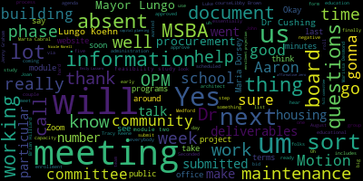
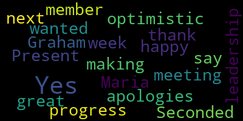
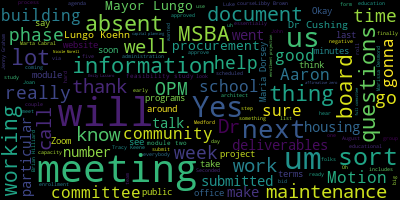
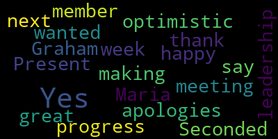

total time: 21.17 minutes
total words: 2819

{kind=link}
total time: 0.22 minutes
total words: 39

{kind=link}
total time: 0.31 minutes
total words: 63

[Graham]: There'll be a meeting of the Medford Comprehensive High School Building Committee held via remote participation for the committee and the community via Zoom on Wednesday, July 17 from 6 to 7. The meeting can be viewed live on Medford Public Schools YouTube channel through Medford Community Media. on your local cable channel, which is Comcast 98 or 22 and Verizon 43, 45 or 47. This meeting is being recorded. Participants can call or log in by using the following information. The Zoom link is 998-8316-2141. So I'm gonna call the roll. If you all can let me know that you're here. I'm just gonna run down the list. So Jenny Graham here, Mayor Lungo-Koehn, see her yet. Dr. Edouard-Vincent. Here. Dr. Cushing.
[Edouard-Vincent]: Present.
[Graham]: Here. Yep, I heard you, thank you. Dr. Galussi? I don't see her just yet. Marta Cabral? Here. Libby Brown? Here. Marissa Desmond? Maria Dorsey? Here. I'm sorry, my camera's not working. You're good, Maria. Brian Hilliard? Is that Brian? Tracy Keene. Here. Emily Lazzaro. Nicole Morell. Aaron Olapade. Saw Aaron.
[Lungo-Koehn]: Here.
[Graham]: Luke Preissner. No, he's not going to be here. Larry Brown.
[Lungo-Koehn]: Here.
[Graham]: Bob Dickinson. Um, Fiona Maxwell. Joan Bowen here. Joan. Um, Tom Dalton here. Chad Fallon. Lori Hodgkin here. John McLaughlin here. Hey, John. Uh, Paul Rousseau here and Phillip Santos. Okay. Um, hi, Emily. I'm marking you here. Thank you. We have 1-2-3-4-5-6-7-8-9-10 present. Five absent. We'll call the meeting to order. The first item on the agenda is our consent agenda, which for this meeting only includes the approval of the minutes from our 6-12 full committee meeting. Is there a motion to approve the minutes?
[Lungo-Koehn]: Motion to approve.
[Graham]: Motion to approve by Aaron Olapade. Seconded. Seconded by Mayor Lungo-Koehn. Hello. OK, we have to do a roll call because we're on Zoom. So Jenny Graham, yes. Mayor Lungo-Koehn. Yes. Dr. Edouard-Vincent. Yes. Dr. Cushing.
[Edouard-Vincent]: My apologies, yes.
[Graham]: No problem. Dr. Galusi, absent. Marta Cabral? Yes. Libby Brown? Yes. Marissa Desmond? Absent. Maria Dorsey? Yes. Brian Hilliard? Oh, we can't hear you, Brian, but I heard a yes. Is that thumbs up? Okay. Tracy Keene?
[Lungo-Koehn]: Yes.
[Graham]: Emily Lazzaro? Yes. Nicole Morell, absent. Aaron Lopate? Yes. And Luke Prisner, absent. So 11 in the affirmative, zero in the negative, five absent. Motion, minutes are approved. Okay, I actually think this meeting is gonna be very short and thank you for hopping on and making sure that we have a quorum. But I am really delighted to report that all of our feasibility, all of our eligibility phase deliverables and getting ahead of myself are complete and submitted. So that's like a big deal. So just a quick rundown for all of you. The feasibility study, funding earmark is something that the council had to take up and vote on. They did that at the 625 meeting, and they voted to earmark or allocate $3 million for our feasibility study that has been moved into a special account that will sort of sit and wait for us to be ready to spend that money by a vote of six affirmative, zero negative, one absent. And that information has been transmitted over to MSBA. We did that. They actually had to approve the language up front. They were watching closely. They watched the meetings get posted. And they were very eager to hear our results. And so they know that that has been approved. So that's a really big deal. and very exciting. The very next day, I finally hit submit on our chapter 74 form, which includes the expanded programs that we're looking to study in our feasibility study. So thanks to Dr. Cushing and Chad Fallon in particular, who helped flesh out that document, both from a like current capacity of programs, future capacity to demonstrate sort of where the wait list was at, to demonstrate that expansion was viable, as well as the work that they did in the lead up to all of that to bring forward to the school committee a proposal that would have us study five new programs as part of this feasibility study from a space perspective. So all of that, and you all approved the submission of that form a couple of meetings ago, but all of that went in on the 26th of June. The educational profile went in on 7-1 in the morning. because I wanted to read it again with fresh eyes. It is a 20-something page document that includes a lot of hard work from all of you and the administration in particular who worked hard to answer a lot of questions about teaching methodology and in particular some of the questions about early education and child care where we have an opportunity to be thinking about studying those things in our educational profile. So that went in on 7-1. You all have copies that Lisa Malone shared with you with this meeting agenda of those two deliverables. We are also working to update the website so that all of those deliverables are available to the public. So you can look out for that on the public site coming up. But those deliverables have gone over to MSBA. The next thing that we submitted on the 11th, which was last week, was our enrollment projection. And that goes through a series of questions around not just school enrollment, but verifying that their numbers that they get from DESE are correct, as well as asking a lot of questions about um, the development plans of the city in terms of housing, um, housing capacity, housing expansion, um, and all of that. So, um, the mayor's office was very helpful. Alicia Hunt in particular, uh, was critical to collecting all of the information from a whole bunch of, um, different folks, um, across the administration, including like the number of building permits and the housing projects that are, that are sort of in permitting phase and how many units they're supposed to be, um, And the other thing we had to submit with our enrollment projection was a lot of information about our special education programs that Joan Bowen helped with. And then a big discussion around our early education and childcare programming that Dr. Pelosi was very integral. So all of that went in on the 7th, sorry, on the 11th, and then On Friday evening, thanks to the help of john McLaughlin and in particular, Paul Rousseau and Dr. Cushing, we submitted our maintenance and capital planning documentation, which was sort of a beast to submit because it covered everything from what are the job descriptions of your maintenance staff to what should your maintenance budget be and if there is a variance between your actual budget and what you think it should be, why is there a variance, and essentially like asking us to respond to how will we ensure good solid maintenance of the building. So it required a ton of exhibits and attachments and lots of work by the finance office under Jerry McHugh and Noel. So all of that work, finally, finally, last finishing touches went in on the 12th. I did talk with MSBA last week, and at the time, what they indicated to me was that the next step for us would be a meeting where we essentially agree on a certified number of students that we would be studying the size of the building for. When I asked last week what she thought the timeline of that would be, she indicated that we should expect to set up that meeting either in late summer or early fall. And yesterday I got an email saying that they're available to talk to us as soon as next week. So we will be having that meeting next week with MSBA and folks from the mayor's team and from the administration where they will go through sort of their deep dive into all of the information we submitted, the housing plans, everything. And then we will talk about what that certified enrollment number should look like. So that is the next piece in the puzzle and the next step for us. Once that is done, all of our information will have to go to the board for consideration and approval to move to what they call module two. And that according to the 270-day timeline that would have had us at the February board meeting, I am hopeful that we will make an appearance at a sooner board meeting than February, given that we're sort of moving quickly through our deliverables. So I'm not sure exactly where that will land or what the lead time is between the time when we say we're sort of all in agreement about this enrollment study and when reasonably, things can get to the board for consideration. So we'll sort of learn more about that in the coming weeks. But that is a wrap, as they say, for the eligibility phase. So I'll stop and ask if anybody has any questions. You know how frequently the board meets? Is it quarterly or? They meet every other month. So they have a December meeting. They have an October meeting. So they must have an August meeting is my guess. But yeah, it's like an every other month schedule. OK. Well, seeing and hearing no other questions. The other thing that I wanted to mention in terms of next steps is for this group to really start to think about immersing itself in what they call module two, which is officially called assembling the project team. So this is where we will put out a procurement to hire an owner's project manager. And we will bring that person on board. And then that OPM will help us craft our procurement to secure the architect. So there is a process around the work that the OPM will do with us in order to inform that architect's bid or bid request. As I've started reading, there is a template that I believe MSBA requires us to use to secure the OPM. I have been in touch with the procurement office to make sure like we have a good understanding of what all is needed from the city side. um for compliance purposes but between now and the next meeting if you all can find 40 minutes or so to immerse yourself in sort of that next module process I think that would be informative and educational for everybody in terms of like what we need to do but but briefly we will have to form a selection committee who will um who will pick the OPM essentially. So there's gonna be some work for us to sort of get that procurement ready to go out the door. And then once we receive those bids back, we among us will have to decide how the selection committee will be formed is my understanding. And then there may be some meetings with MSBA or like round tables that happen that they may require us to go to. There is a whole slew of other things that happen in module two because you move on to the architect. But like in my mind, once we have the OPM on board, it will be somebody who does this for a living with MSBA and they will be able to sort of help educate us along the way. So that's just a sort of to do for everybody. And I'm still like reading and diving through those documents myself. So that is something we'll talk about and take up in our next regular meeting. Questions about that? Tracy? Where do we find modulo 2? If you go onto the MSBA website, there's a section called building with us and it specs it out module one, module two, module three. So if you go in there, you can like really dive in. There's lots of help. There's lots of information out there. All the model documents are out there as well as, you know, there are documents around like really like what they see in terms of, Costs that other communities have incurred or over the course of this next phase, both for the OPM and the designer and then in construction. And, you know, it's hard to look at those and and really assess like how does that compare to what we will do. I will say that MSBA was comfortable with the allocation of $3 million. And they don't give communities numbers, but they are happy. They will tell a community if they have not allocated a sufficient amount of funds for the phase. So we're good there. And obviously, the procurement will have to support whatever we do from there. So yeah, all of that is on their website. And there's lots of templates and information out there. Their board meetings are public. Everyone is welcome to join, as are all of their meetings. So if there are meetings that you see out there, you're all welcome to just join and listen and be a participant. But there will be some formal things that we have to attend over the course of the next phase as well. So we'll keep an eye on that. Any other questions about Module 2? All right. Um, so the other thing that I wanted to make sure that I say out loud is that we originally had an August 14 meeting scheduled for the full committee via zoom, and we will not have that meeting as a full committee, because we are very much. in a mode of waiting to hear. So I don't wanna take up your time in that next meeting if there is an action for this group to take. Instead, the Communications and Community Engagement Subcommittee will meet at that time on August 14th at 6 p.m. And that will help us fill the gap of the meeting that I needed to reschedule at the end of June. Um, and they will be, uh, working on the communications and community agent subcommittee. We'll be working on some of the surveys to collect FAQs from, um, from residents, um, as well as, um, a survey that gets out to all our boards and commissions to help understand sort of who needs to be plugged into the process and when. And then the other thing that we'll be working on is, um, you know, the start of what will become a little bit of like a roadshow kind of document that we can use to talk about where we are with the project. And I also am in touch with a couple of folks in a couple of districts about tours to be scheduled over the course of this summer. So as soon as I have those dates, I will let you know so you can mark your calendar. My contacts are just trying to like work with their contacts and navigate everybody's school vacation out of office time. So more to come on that, but as those get scheduled, I will keep you posted. Um, are there any other questions? Or from the group about where we are and what we're doing anything.
[Edouard-Vincent]: Just wanted to say, I'm just so happy that we're making great progress. And I'm very optimistic about next week's meeting. So thank you member Graham for all of your leadership.
[Graham]: Oh, it was a true team effort. There was a lot of documentation, particularly on the maintenance capital planning. Oh, thank you for that reminder, though. The enrollment projection and the maintenance and capital planning information gets submitted directly into a portal. So it's not quite as easy to just pop it out to the site and link it there. So I'm working through like how to make that information shareable. Like we have working documents that we use to like get those answers ready and they're a hot mess like working documents are. So I'm just gonna, I'm just working on like how to make sure like there can be a cohesive story there and then we will publish all of that stuff out to the website as well if people are interested. And we will share all of that with you all as soon as it's as soon as it's cleaned up. So that's on my to-do list over the coming days is just to figure out like, especially with the maintenance stuff, it's just, it's a lot and it's a hundred attachments and all kinds of things, so. Any other questions, comments, thoughts? Okay, is there a motion to adjourn?
[Lungo-Koehn]: I'll just also thank you, Member Graham, for leading the charge and to the whole team, as you said, it's a team effort, but for getting this in and in so timely, it's exciting to see everything moving forward so quickly. So thank you, and with that being said, I'll move to adjourn.
[Graham]: Motion to adjourn by Mayor Lungo-Koehn.
[Edouard-Vincent]: Seconded, Maria.
[Graham]: Seconded by Maria Dorsey. And one more painful roll call. Jenny Graham, yes. Mayor Lungo-Koehn.
[Lungo-Koehn]: Yes.
[Graham]: Dr. Edward Benson. Yes. Dr. Cushing. Yes. Dr. Galusi, absent. Marta Cabral. Yes. Libby Brown. Yes. Marissa Desmond. Maria Dorsey.
[Edouard-Vincent]: Yes.
[Graham]: Brian Hilliard. Yes. Tracy Keene.
[Edouard-Vincent]: Yes.
[Graham]: Emily Lazzaro? Yes. Nicole Morell? Yes. Aaron Lapate?
[Lungo-Koehn]: Yes.
[Graham]: Luke Preissner? Absent. So 12 in the affirmative, zero in the negative, three absent. That's probably the fastest meeting we'll ever have. Thank you, everyone. Have a good night.
[Lungo-Koehn]: Bye, everybody.
|
total time: 21.17 minutes total words: 2819  |
total time: 0.22 minutes total words: 39  |
total time: 0.31 minutes total words: 63 |
|